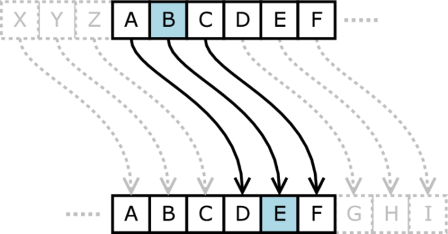
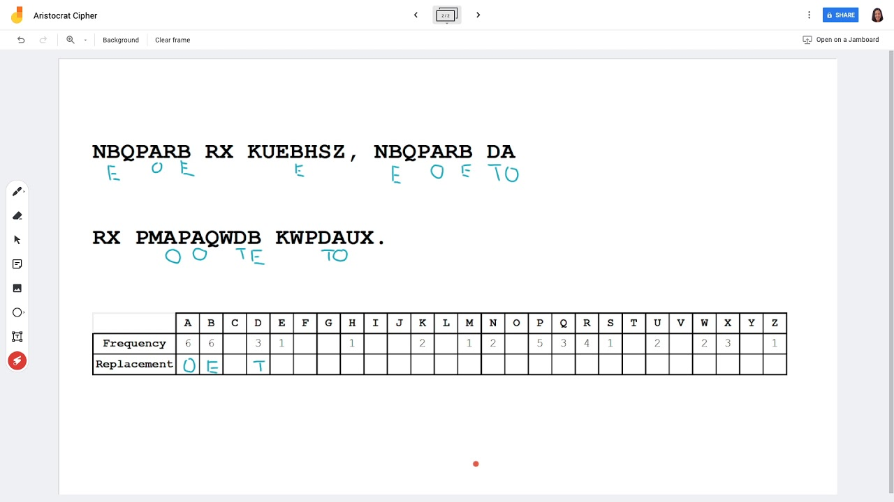
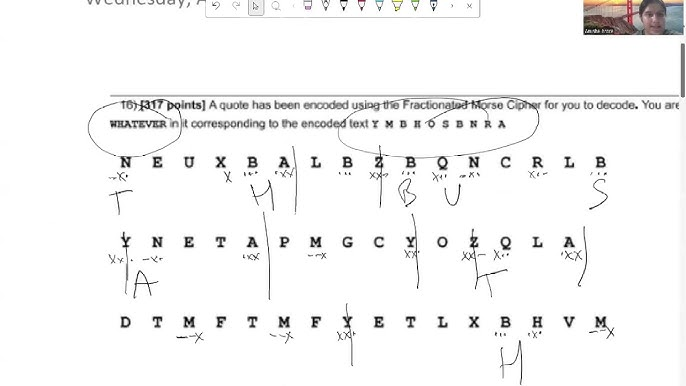

CEASER CIPHER
A Caesar cipher is a basic substitution cipher that replaces each letter in a text with another letter
shifted by a fixed number of positions down the alphabet.
Example: With a shift of 3, the letter A becomes D, B becomes E, and the word "hello" turns into "khoor".
^challenge (along with all the other paragraph texts) (A rounded rectangle "card")^
^challenge (A pill shape)^

ARISTOCRAT CIPHER
An Aristocrat cipher is a monoalphabetic substitution cipher where each letter in a message is replaced by a different letter. Two letters cannot be replaced by the same letter.

^challange (Numerical sizes to match 1)^
FRACTIONATED MORSE CIPHER
A fractionated morse sipher uses three symbols: dots (.), dashes (-), and crosses (X). A single X is the end of a Morse letter, and a double XX is the end of a word. Then, the long row of dots and dahses is divided into groups of 3. Each group of 3 is mapped to a specific letter using the key substitution table.

^challange (Numerical sizes to match 1)^
^challenge (A sharp-cornered square)^